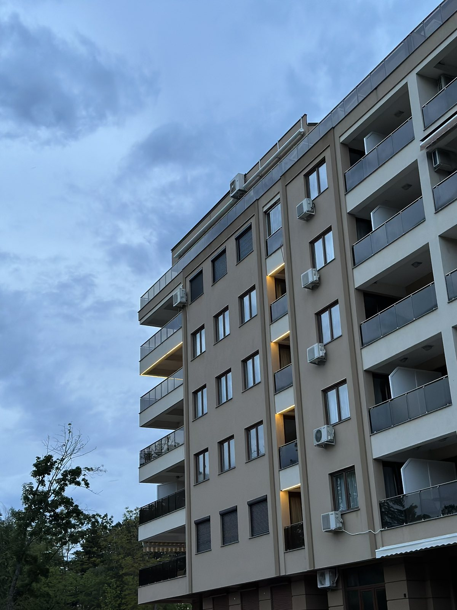
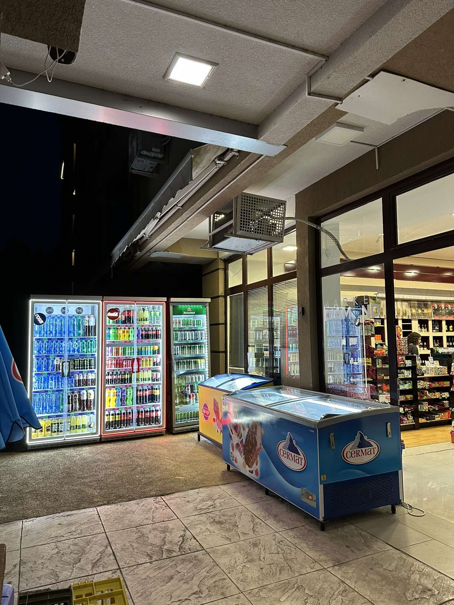
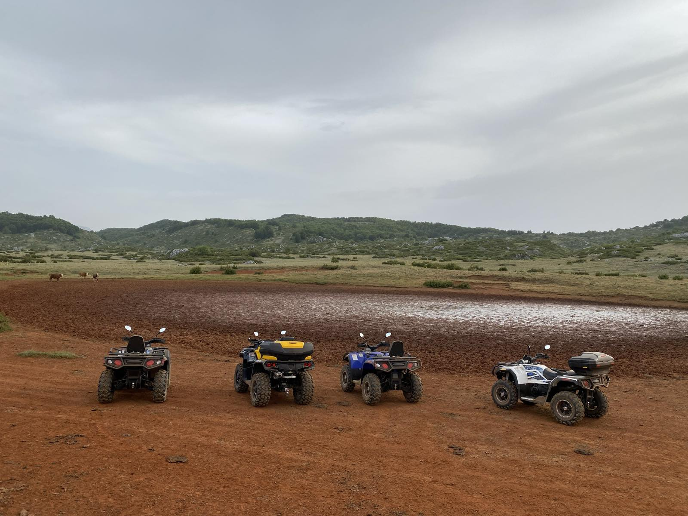

Welcome to Park Diamond Apartments – where luxury meets adventure!
Experience comfort, excitement, and a touch of elegance at Park Diamond Apartments. Your gateway to a world of possibilities, nestled in breathtaking surroundings.
Since our inception in 2017, we've grown from six upscale apartments to a thriving destination. In 2022, we expanded to offer ATV rentals, added 15 more apartments, and introduced a vibrant market. Now, in 2025, we proudly provide 25 apartments, accommodating 60 guests in total.

Park Diamond Apartments
We offer 25 apartments suitable for individual stay, but also for organizing small events like seminars, team building groups, etc.
Park Diamond Apartments has the capacity to accommodate up to 60 guests in different types of apartments.
Enjoy your stay at our apartments, away from the city crowd, surrounded by beautiful forests and ofcourse our most precious lake.

Diamond Market
Convenient On-Site Market
Our on-site market eliminates the challenge of distant grocery shops. Stocked with essentials and more, it ensures easy access to fresh produce and pantry staples. Say goodbye to city trips for necessities – shop conveniently with us and experience comfort, excitement, and elegance at Park Diamond Apartments. Your all-in-one destination nestled in scenic surroundings.

ATV by Park Diamond
Explore the breathtaking beauty of Ohrid's mountainous terrain with our thrilling ATV tours. Embark on an adrenaline-packed adventure as you traverse rugged trails, winding through pristine forests and offering stunning vistas of the Ohrid region. Whether you're a nature enthusiast or seeking an adrenaline rush, our ATV tours in the mountains of Ohrid promise an unforgettable experience in the heart of Macedonia's natural wonderland.